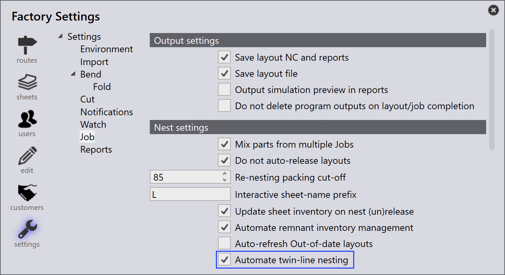
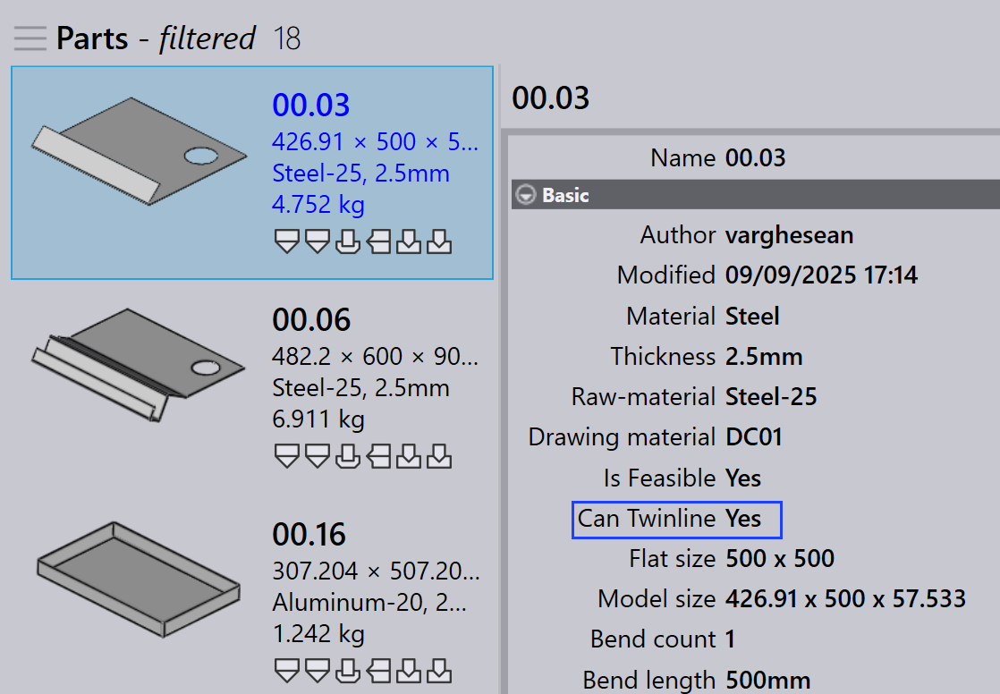
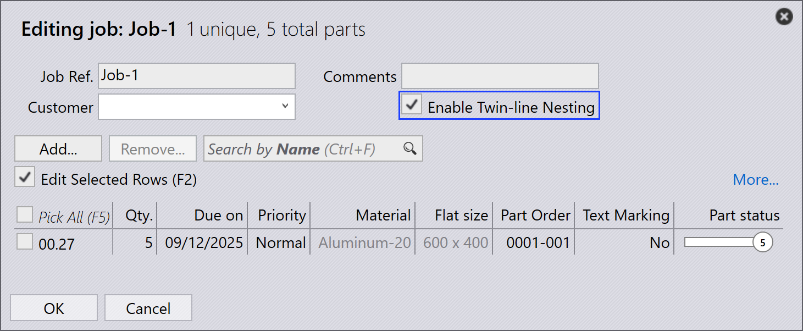
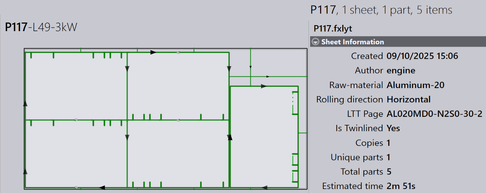

双线排样
双线排样允许具有公共边的零件使用单条线而不是两条线进行切割。这可以节省材料、缩短切割时间并提高整体生产效率。
-
要启用此功能，请单击 出厂 → 套料 → 排样设置 → 自动双线排样。

-
启用此选项后，系统会自动检查每个导入的零件的双线可行性。
-
可行的零件在导入时自动标记为 可通过 Twinline 算法加工 为 是。

-
在作业对话框中，如果作业需要双线排样，您可以启用 启用双线排样。

| 只有在工厂设置中启用了 自动双线排样 时，此选项才会显示。 |
-
规划后，包含共享公共边的零件的任何排样都会自动进行双线排样。

-
当字段 已通过 Twinline 算法加工 布局标记为 是 时，布局被视为已双线排样。